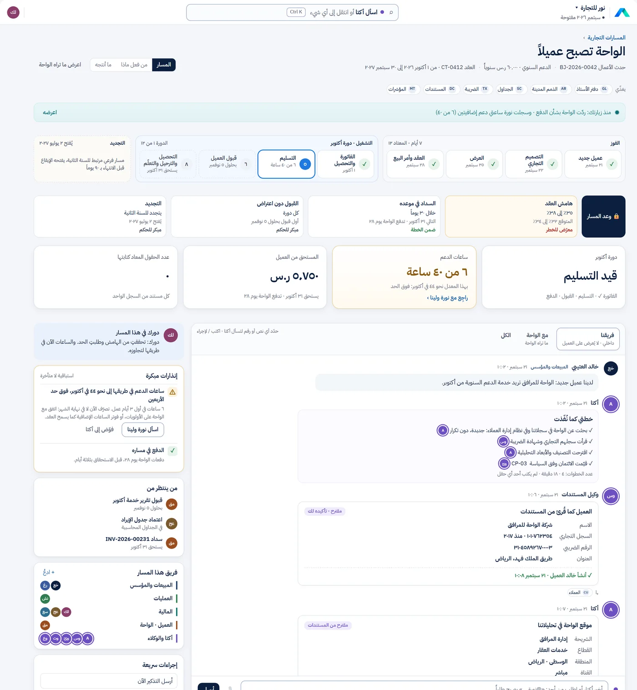
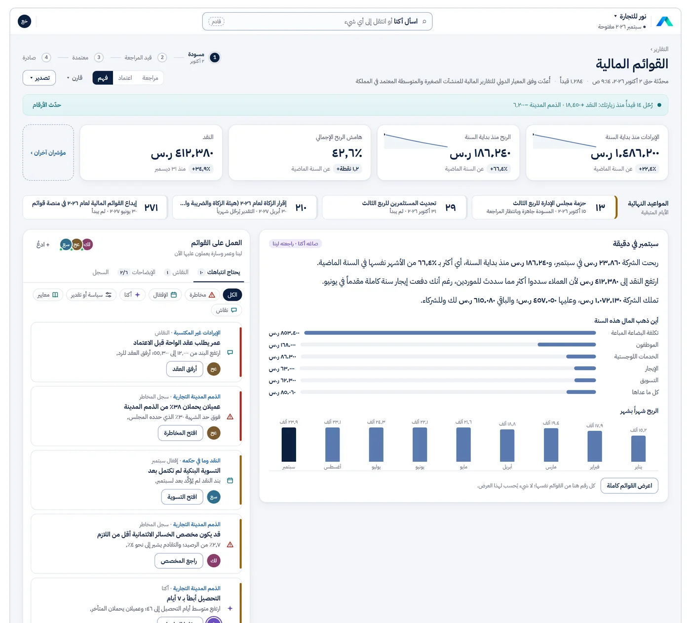
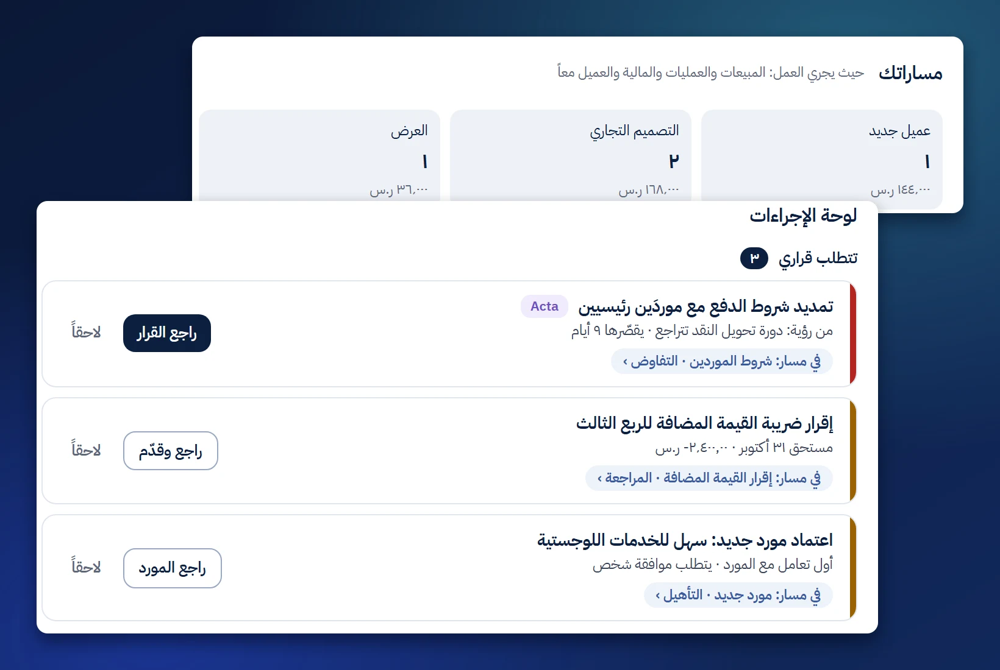
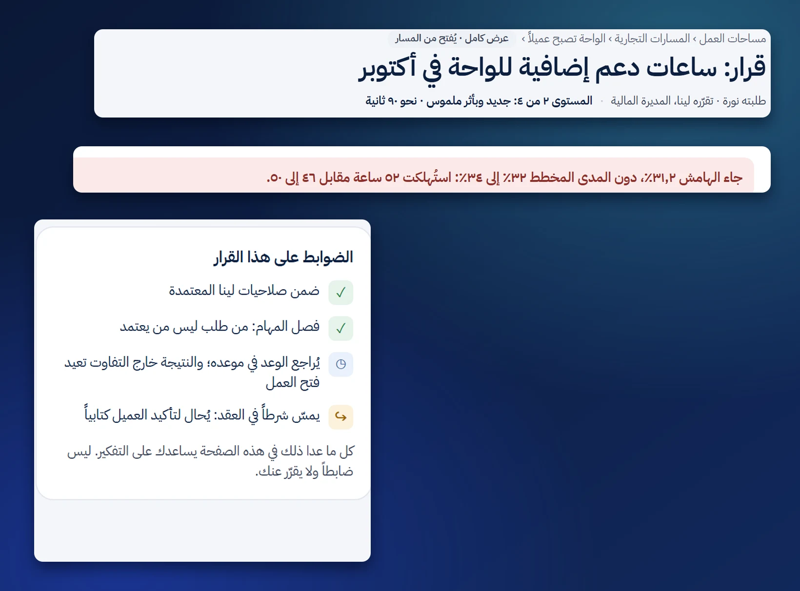
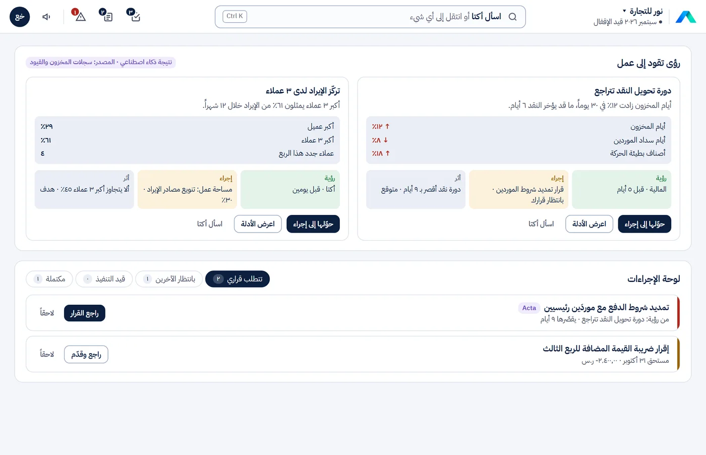
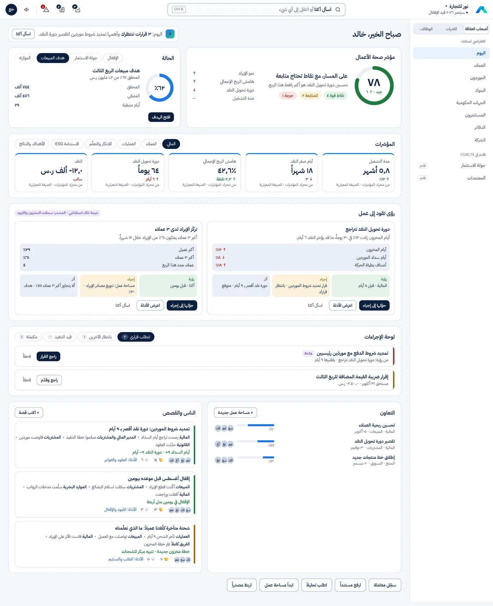

Intelligence Acts Together
نظام تشغيل الأعمال، حيث يعمل الذكاء معًا
منصة المنشأة التكاملية.

بُني ليُمكّن الإنسان من الوفاء بوعده.
نقدّم المالية كخدمة منذ ٢٠٢٣ عبر أنظمة رائدة، فعرفنا أين تتوقف قدراتها. ومن هناك يبدأ كو أكتا: ينقل الفريق المؤسس من الإشارة إلى القرار ثم النتيجة والأثر، ليدير اقتصاديات نموذج أعماله ومخاطره وإمكاناته عبر منظومته كاملة.
نظام خبير يفهم ويتصرّف
يحمل خبرة في المعايير الدولية للتقارير المالية والحوكمة والضرائب، فيفهم كل حدث في أعمالك، ويتصرّف ضمن ضوابطك.
أصحاب المصلحة من التصميم
العملاء والموردون والمستثمرون ومجلس الإدارة في المسار نفسه.
مسارات كو أكتا
من أول تواصل إلى التحصيل، مرتبطًا بالدفاتر.
الاستراتيجية في العمل اليومي
كل مهمة تدفع الخطة إلى الأمام.
استباقي وتنبّؤي
يتحرّك قبل الموعد، ويمنع الخطأ، ويرى ما هو قادم.
ذكاء اصطناعي في الأساس: كل الفاعلين فريق واحد
الناس ووكلاء الذكاء الاصطناعي والتوائم الرقمية والروبوتات والأنظمة يعملون معًا، كلٌّ ضمن صلاحياته.
استشراف يحدّد الاتجاه
سيناريوهات تختار توقيت الابتكار التالي أو تغيير المسار.
الاقتصاد في كل قرار
الطلب والأسعار وتكلفة رأس المال إلى جانب الأرقام المالية.
مساحة عمل للقيادة
يرى فيها القادة ما يهمّ، فيقرّرون ويتابعون التنفيذ.
الذكاء داخل كو أكتا.
الإنسان يقرّر، والذكاء يُعِدّ ويشرح ويتصرّف ضمن الصلاحيات التي تمنحها له.
أكتا
خبيرك عند كل رقم: اسأله كتابةً أو بصوتك، فيجيبك أكتا من الدفاتر، ويُظهر دليله، ويُميّز ما يستنتجه.
فريق الوكلاء
وكلاء لكلٍّ منهم دور وأهداف وضوابط تضعها شركتك. يؤدّون العمل الروتيني، ويقترحون ويشرحون، ولا يعتمدون عملهم بأنفسهم أبدًا.
العقل المؤسسي
خريطة حيّة واحدة لشركتك: الناس والعملاء والعقود والأحداث والقرارات، مترابطة كي يأتي كل جواب في سياقه.
التوائم الرقمية
لكل شخص توأم يتعلّم ويجيب وينصح ويحاكي، ولا يتصرّف إلا ضمن الصلاحيات التي تمنحها له.
ذكاء المستندات
يفهم كو أكتا كل مستند لحظة وصوله: ما هو، ولمن هو، وما أثره، ثم يوجّهه إلى المسار الصحيح.
حوكمة تُطلق الابتكار وتحميه.
تعمل الضوابط عند لحظة الالتزام، وتُمنح الصلاحيات مسبقًا، فتتحرك الفرق بسرعة وتبقى الأعمال في أمان.
مشكلات تعيشها الأعمال اليوم
ليست ميزات ناقصة، بل طريقة بناء الأنظمة نفسها. وهذه إجابة كو أكتا عن كل منها:
-
حدود مصمَّمة بين الأقساماليومتطبيقات منفصلة لكل قسم، تربطها واجهات برمجية، ويبقى أصحاب المصلحة خارجها.كو أكتامسار عمل واحد من البداية إلى النهاية، يدخله كل أصحاب المصلحة وفق قواعد إفصاح واضحة.

من أول تواصل إلى التحصيل، مسار واحد. -
محاسبة بمعزل عن الأعمالاليومنظام بُني ليعمل فيه المحاسبون وحدهم، بعيدًا عن القرار.كو أكتامالية جزء من العمل نفسه: تتحدث وتتصرف وتشارك في القرار.

القوائم المالية مساحة عمل واحدة للمالية والإدارة، ومعها «سبتمبر في دقيقة»، بلغة يفهمها المؤسس. -
شاشات ثابتة تحتاج خبرة تقنيةاليومشاشة لكل معاملة، وعلى المستخدم أن يعرف أين يذهب وماذا يملأ.كو أكتاالشاشة تتشكّل حول ما تريد إنجازه ودورك، وتسأل فقط عمّا يلزم.

صفحتك الرئيسية، حيث يجري العمل. -
نظرة إلى الماضي لا إلى المستقبلاليومتأتي الضوابط والتقارير بعد وقوع الحدث، عند إقفال نهاية الشهر.كو أكتاضوابط عند لحظة الالتزام، وإقفال مستمر، وأرقام تستشرف القادم.

قرّر. التزم. تعلّم. -
فجوة الاكتمالاليومأحداث تقع في الأعمال ولا تصل إلى الدفاتر، فتأتي القوائم ناقصة وتتكرر إعادة إصدارها.كو أكتايقارن أحداث الأعمال بالدفاتر، ويكتشف ما لم يُسجَّل، ويقترح القيود.

رؤية. إجراء. أثر. -
أشهر حتى تظهر القيمة، ثم جمود لسنواتاليوممشروع تطبيق طويل بعيد عن العمل، ثم تصميم ثابت إلى أن يُعاد التطبيق من الصفر.كو أكتاقيمة أولى سريعة، ونظام يتطور مع العمل، وكل تغيير بنسخة موثّقة.

أعمالك في نظرة واحدة.
على المعصم، وفي السيارة، وفي الاجتماع.
كو أكتا معك أينما كنت، وبالضوابط نفسها التي تعمل بها على الويب.
- في النادي الرياضيالهدف والنقد في لمحة.
- أثناء القيادةبالصوت فقط، والاعتمادات تنتظرك.
- في اجتماعيُجهَّز الطلب مسودةً، ويؤكّده إنسان.
كو أكتا للجوال
صُمّم للعمل السريع أثناء التنقّل، وليس نسخة مصغّرة من الويب.
- Aأكتاكيف نسير نحو هدف أكتوبر؟هدف أكتوبر٨٢٪بقي ٩ أيام · الفجوة من عميليناسأل
اسأل بصوتك، وشاهد الرقم ومن أين تأتي الفجوة. - فاتورة جديدةجرير للتجارةأستمع إليك…كراسي مكتب × ٤٣٬٢٠٠مكتب × ٢٢٬٤٠٠الإجمالي مع الضريبة٦٬٤٤٠ ر.ساقرأها ليوقّع
أملِ الفاتورة، وراجع كل سطر. - الخليج للخدمات اللوجستيةفاتورة ضريبية✓ الصفحة واضحة✓ حادّة✓ بلا انعكاس
صوّر الفاتورة، فتسلك مسار كل فاتورة. - ينتظرك٣فاتورة مورّدالخليج للخدمات اللوجستية٤٬٨٣٠ ر.سلماذا وصلت إليك: ضمن حدود اعتمادكالدليل ›أعِدهااعتمدالاعتماد ببصمة الوجه
قرّر بلمستين، والدليل على بُعد لمسة. - الثلاثاء ٤ نوفمبر٩:٤١Aسدّدت الواحة فاتورتها
أعمالك في لمحة، وبما تسمح به فقط. - حزمة المجلسالربع الثالث ٢٠٢٦ · الإصدار ٢✓ معتمدةأبرز النتائج›القوائم المالية›المخاطر›اسأل المدير المالي
حزمة المجلس في جيبك.
كو أكتا BUILD: نصمّم أعمالك معك
بدلًا من معالج إعداد بشاشات وحقول، نأخذك في رحلة لفهم أعمالك وتصميمها، مبنية على إطار Deep BUILD من دييب بزنس بارتنرز:
- احكِ عن أعمالك
بكلماتك، أو ارسمها: ماذا تبيع، ولمن، وكيف تعمل. - يقترح كو أكتا التصميم
دليل الحسابات والأبعاد والضوابط ودورة الإقفال، ولكل اقتراح سببه وبدائله. - أنت تقرّر
تقبل أو تعدّل أو تسأل مديرًا ماليًا في أي خطوة. - يتطور مع أعمالك
كلما تغيّرت أعمالك تطوّر التصميم، وكل تغيير بنسخة موثّقة.
من مختبر الابتكار
خرج كو أكتا من مختبر الابتكار المالي في دييب بزنس بارتنرز، ومن عمل حقيقي مع مؤسسين ومستثمرين في المنطقة.
الوصول المبكر
نجهّز وصولًا مبكرًا لمجموعة مختارة من الشركات. سجّل لتكون من أوائل مستخدمي كو أكتا عند إطلاقه، أو تحدّث مع خبير لتراه.
احصل على وصول مبكرلا نستخدم بياناتك إلا للتواصل معك بشأن كو أكتا.